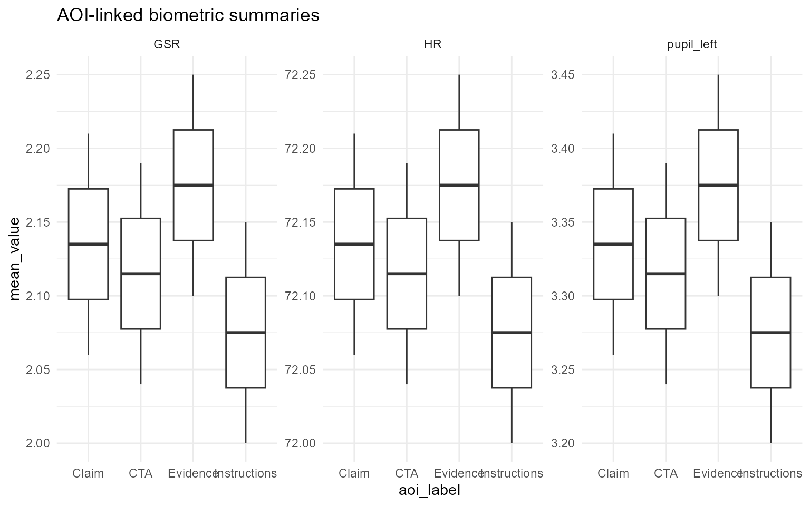
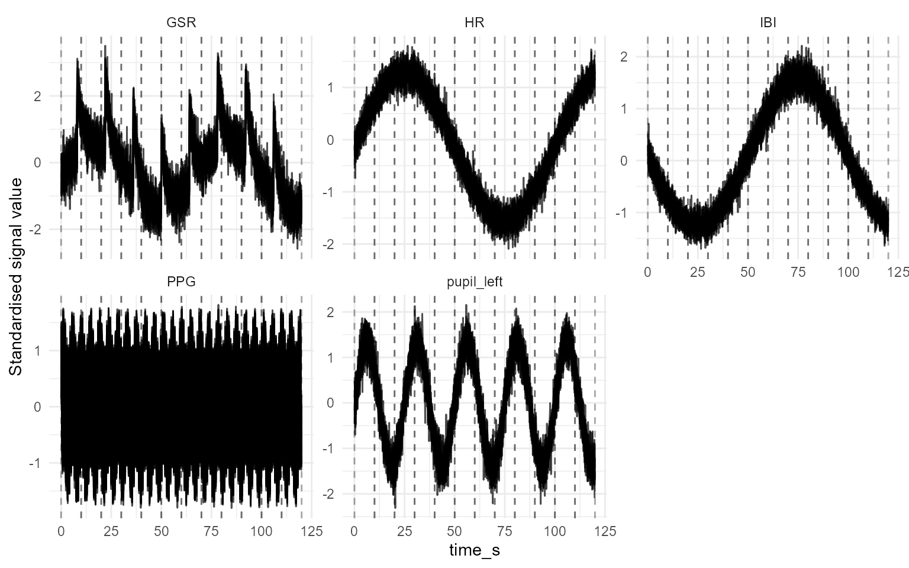
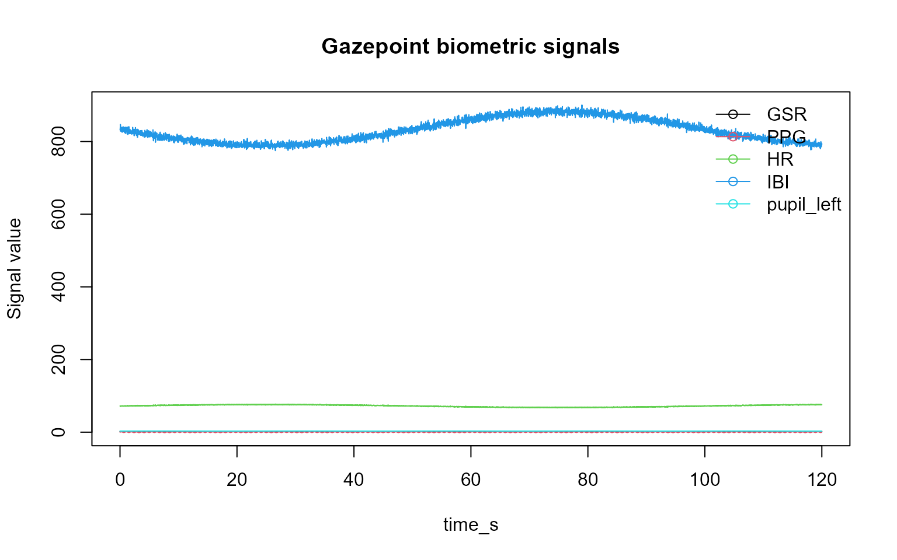
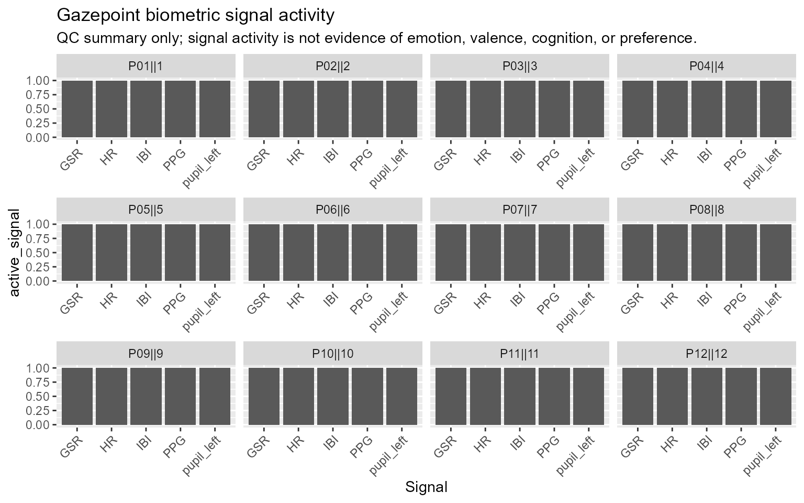
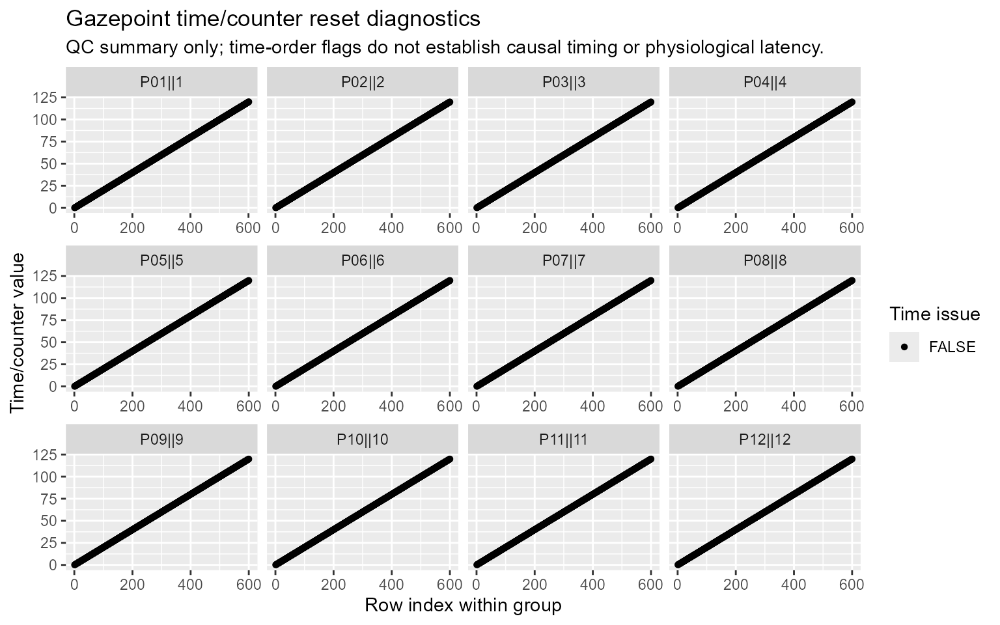
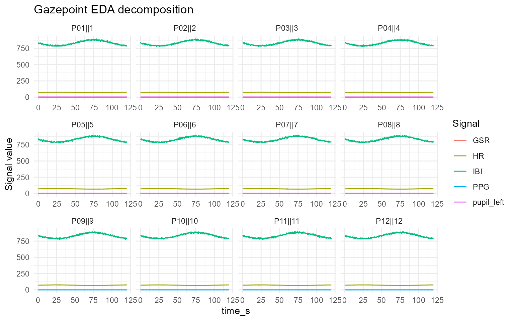
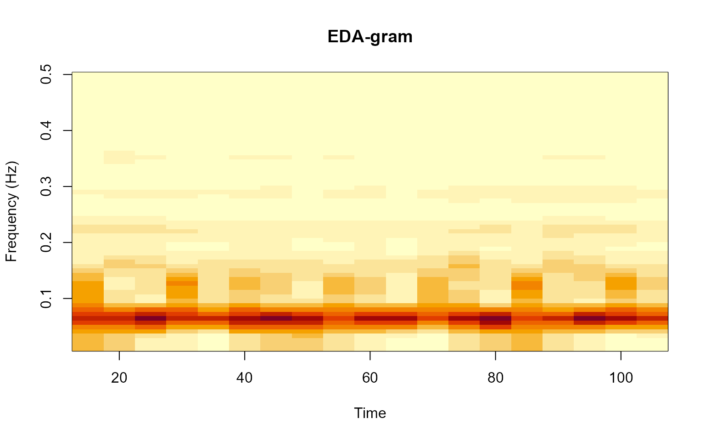
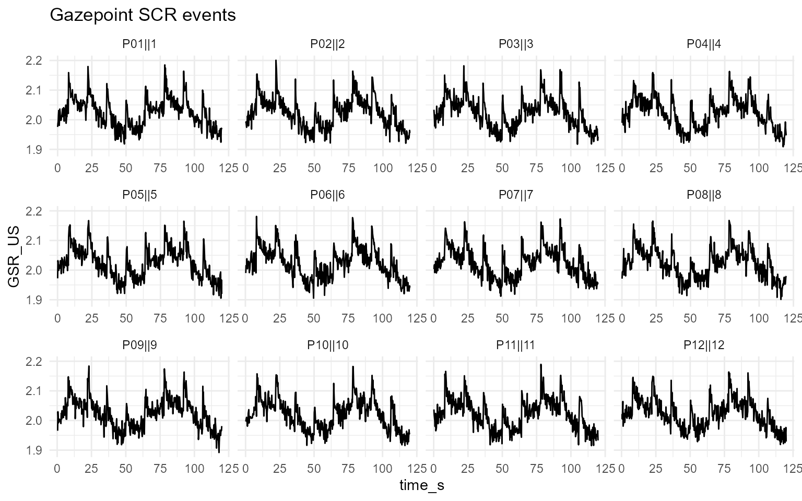
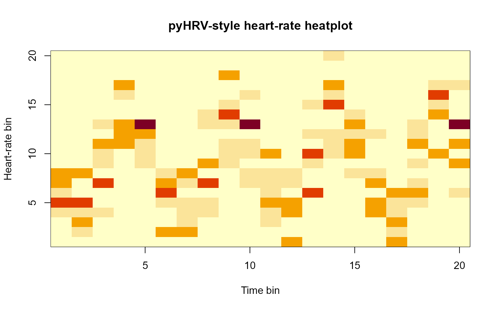

Plot gallery
This article showcases all exported plot_* helpers in
gpbiometrics using synthetic Gazepoint-like data.
The example code is hidden so that the page functions as a compact
visual gallery. Function names are shown above each rendered
example.
The examples are for documentation and visual inspection only. The
synthetic signals are not real physiology and should not be interpreted
as emotion, stress, cognition, preference, health status, or
diagnosis.
AOI and multimodal plots
plot_gazepoint_aoi_biometrics()

plot_gazepoint_multimodal_timeline()

Biometric quality and signal plots
plot_gazepoint_biometric_quality()
plot_gazepoint_biometric_report_dashboard()
plot_gazepoint_biometric_signals()

plot_gazepoint_signal_activity()

plot_gazepoint_time_resets()

EDA and SCR plots
plot_gazepoint_eda_decomposition()

plot_gazepoint_eda_gram()

plot_gazepoint_scr_events()

plot_gazepoint_scr_specification_curve()
PPG, HRV, and respiration plots
plot_gazepoint_ppg_breathing()
plot_gazepoint_ppg_peak_detection()
plot_gazepoint_ppg_poincare()
plot_gazepoint_ppg_segmentwise()
plot_gazepoint_pyhrv_hr_heatplot()

plot_gazepoint_pyhrv_radar_chart()
plot_gazepoint_pyhrv_tachogram()
Eye-movement plot
plot_gazepoint_saccade_main_sequence()